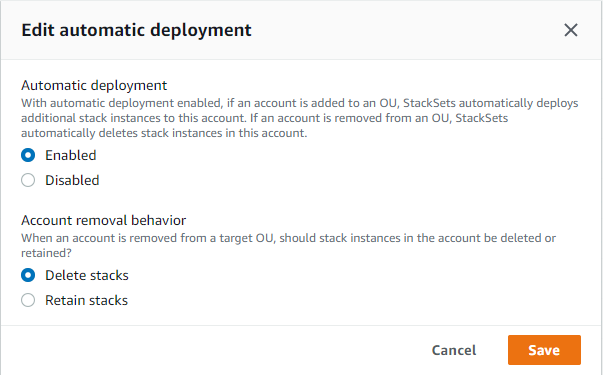

为具有服务托管权限的堆栈集管理自动部署
启用自动部署后，StackSets 将自动部署到将来添加到目标组织或组织单位（OU）中的账户。启用保留堆栈后，当账户从目标 OU 中删除时，账户中的堆栈资源将被保留。您可以随时调整在创建堆栈集时指定的自动部署设置。
注意
覆盖的参数值仅适用于当前已在目标 OU 及其子 OU 中的账户。将来添加到目标 OU 及其子 OU 的账户将使用堆栈集默认值，而不使用覆盖的值。
使用 AWS CloudFormation 控制台管理自动部署
-
从 https://console.aws.amazon.com/cloudformation.
打开 AWS CloudFormation 控制台 -
从导航窗格中，选择 StackSets (堆栈集)。
-
在StackSets（堆栈集）页面上，选择您在 创建具有服务托管权限的堆栈集 中创建的堆栈集。
-
选择堆栈集后，从 Actions（操作）菜单中选择 Edit automatic deployment（编辑自动部署）。自动部署在堆栈集级别设置。您无法为 OU、账户或区域选择性地调整自动部署。

-
在 Edit automatic deployment (编辑自动部署) 模式中，管理 Automatic deployment (自动部署) 和 Account removal behavior (账户删除行为) 设置。
注意
选择 Retain stacks (保留堆栈) 后，堆栈实例将从堆栈集中移除，但堆栈及其相关资源将保留。资源保持当前状态，但不再是堆栈集的一部分。
-
选择 Save（保存）。
使用 AWS CLI 管理自动部署
-
打开 AWS CLI。
-
运行
update-stack-set命令，指定在 创建具有服务托管权限的堆栈集 中创建的堆栈集。自动部署在堆栈集级别设置。如果您在更新堆栈集时指定 --auto-deployment，则无法指定 --deployment-targets 或 --regions。aws cloudformation update-stack-set --stack-set-nameStackSet_myApp--auto-deployment Enabled=false -
使用作为步骤 2 中
update-stack-set输出的一部分返回的operation-id，运行describe-stack-set-operation以验证堆栈集是否已成功更新。aws cloudformation describe-stack-set-operation --operation-idoperation_ID
自动部署示例
在启用自动部署时，将账户添加到目标组织或 OU、从目标组织或 OU 中移除账户或在目标 OU 之间移动账户时，会触发这些自动部署。
例如，堆栈集 StackSet1 以 us-east-1 区域中的 OU1 为目标 OU。堆栈集 StackSet2 以 us-east-1 区域中的 OU2 为目标 OU。OU1 包含账户 AccountA。
如果我们在启用自动部署的情况下，将 AccountA 从 OU1 移至 OU2，StackSets 会自动运行删除操作以便从 AccountA 移除 StackSet1 实例，并在队列中添加将 StackSet2 实例添加到 AccountA 的创建操作。